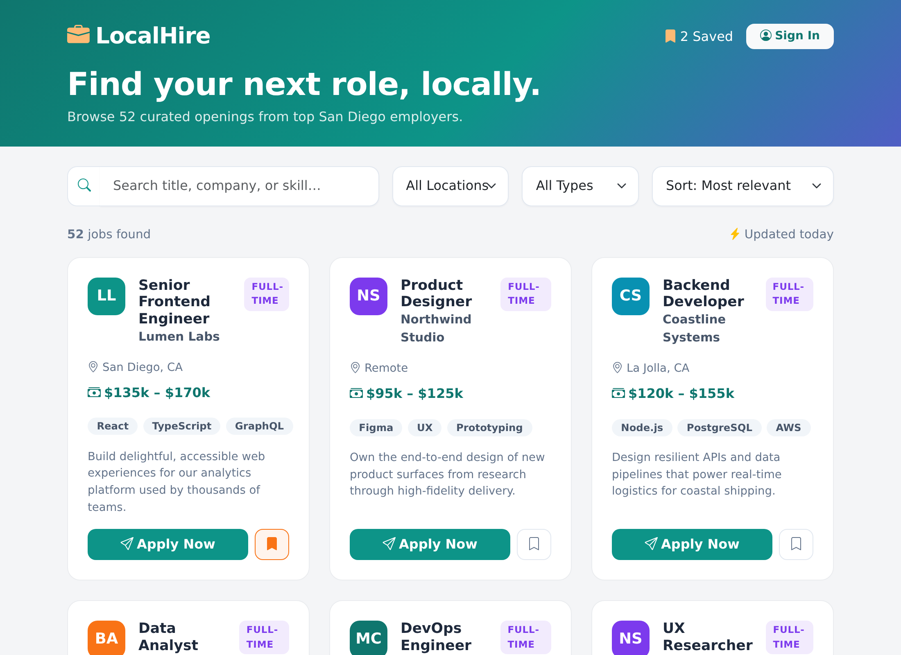

Build a frontend-only job application site using React, Vite, seeded data, and localStorage
Project: Job Application Site | Stack: React / Vite / localStorage
Build a frontend-only job application management site that allows applicants to search, view, and apply to seeded job postings. Submitted applications are stored in browser localStorage. Docker Compose packaging is reserved for the Operations step.
localStorage testingWe have just been hired by a new client to build their hit new job board. They are not very technical and are vague about the details. Here is what they have told us so far:
“We want a site where people looking for work can browse the jobs we have posted and apply right from the page. Folks should be able to search and narrow things down so they aren't scrolling forever, and it would be nice if they could save the postings they like to come back to later. That's roughly what we're picturing for now.”
You kick off the entire workflow with a single prompt describing what you want to build. AI-DLC Workflow takes it from there — it detects your workspace, sets up tracking, and starts guiding you through the phases.
Open a new chat and type:
Using AI-DLC, build a local-first job application management site using React, Vite, seeded job data, and browser localStorage. Applicants can search, view, and apply to job postings. Keep the app frontend-only with no login.
AI-DLC Workflow activates and runs Workspace Detection automatically. It will display a welcome message explaining the three-phase lifecycle (Inception → Construction → Operations), scan your workspace, set up the aidlc-docs/ directory with state and audit tracking, and proceed to the next stage.
The AI analyzes your request and asks clarifying questions about anything unclear. You'll also see a question about enabling security extension rules.
localStorage. Should search be full-text or filter-based?When the AI presents the questions file: Open it, fill in your [Answer]: tags. For the security extension question, answer "No" since this is a prototype. Then tell the AI:
I have answered the clarification questions. Please re-read the file and proceed.
The AI may ask follow-up questions. Once resolved, it generates a requirements document and presents an approval gate.
The AI creates user stories that become the contract for what gets built. It runs in two parts: first it plans how to structure the stories (and asks you about organization style and detail level), then it generates the actual stories with personas and acceptance criteria.
Part 1 — Planning: The AI creates a story generation plan with questions. Open the plan file, fill in your answers, then tell the AI you're done. The AI summarizes your choices and asks for plan approval.
Part 2 — Generation: The AI executes the plan step by step, marking checkboxes as it goes. It generates user personas and user stories. The AI presents the completed stories for your review.
Go to aidlc-docs/aidlc-state.md, find the first unchecked item, then go to the corresponding plan file and resume from that point. For shorter workshops, you can skip this and continue in the same chat.The AI looks at everything gathered so far and decides which Construction stages to run. It generates an execution plan with a visual diagram showing what's completed, what will execute, and what's being skipped.
If Local Packaging is marked SKIP and you want the Operations packaging step, tell the AI:
Add Local Packaging to the plan. We need a production Vite build served by Nginx with Dockerfile, docker-compose.yml, .env.example, and a local deployment guide for the Operations step.
Review the execution plan and respond:
AI-DLC Workflow designs the detailed component model — data models, business logic, component interactions, and how they implement the user stories. No code yet.
Review the design. If you want changes, tell the AI. When satisfied:
This is the main build activity. The AI creates a plan for what code to generate, gets your approval, then executes it step by step — checking off each item as it goes. Code goes in the workspace root, documentation goes in aidlc-docs/.
job-app folder, with Bootstrap CDN styling (creative color theme, not default blue), 50+ seeded jobs, search/filter/sort, job detail view, application form, submitted applications stored in localStorage, and responsive layout with hover effects. No login or backend services should be added.Part 1 — Planning: The AI creates a code generation plan with numbered, checkboxed steps. Review that it covers all components from the design.
Part 2 — Generation: The AI executes each step, marking checkboxes as it completes them.
When complete, review the generated code and respond:
The AI packages the frontend-only React/Vite app for repeatable local Operations use. This covers:
job-app/distdocker-compose.yml exposing the site at http://localhost:3000nginx.conf for SPA routing fallback.env.example, local deployment guide, and validation reportAI-DLC Workflow generates build and test instructions covering how to build, preview, and verify the application.
cd job-app npm install npm run build npm run preview -- --host 0.0.0.0
Open http://localhost:4173, search for jobs, open a job detail, submit an application, and refresh to confirm the application remains in localStorage.
For the Operations packaging path:
docker compose up --build
Open http://localhost:3000 and repeat the browser validation flow.
AI-DLC Workflow's Operations phase is a placeholder for future expansion. This is a group discussion about what comes after building.
Discuss as a group:
Now that we've built and deployed our job application site, discuss how AI would help with: 1. Packaging and serving static build updates locally 2. Monitoring local Nginx logs and browser-side behavior 3. Exporting, clearing, or migrating localStorage application data 4. Migrating from localStorage to an API and database later Please explain how this would work for our specific application.
[Answer]: tags, then tell the AI to re-read.aidlc-state.md. For short workshops, you can often skip this.aidlc-state.md to see where you are at any point.We will work on building an application today. For every front end and backend component we will create a project folder. All documents will reside in the aidlc-docs folder. Throughout our session I'll ask you to plan your work ahead and create an md file for the plan. You may work only after I approve said plan. These plans will always be stored in aidlc-docs/plans folder. You will create many types of documents in the md format. Requirement, features changes documents will reside in aidlc-docs/requirements folder. User stories must be stored in the aidlc-docs/story-artifacts folder. Architecture and Design documents must be stored in the aidlc-docs/design-artifacts folder. All prompts in order must be stored in the aidlc-docs/prompts.md file. Confirm your understanding of this prompt. Create the necessary folders and files for storage, if they do not exist already.
Your Role: You are an expert product manager and are tasked with creating well defined user stories that becomes the contract for developing the system as mentioned in the Task section below. Plan for the work ahead and write your steps in a Markdown file: user_stories_plan.md with checkboxes for each step in the plan. List your Deliverables in the plan. If any step needs my clarification, add a note in the step to get my confirmation. Do not make critical decisions on your own. Upon completing the plan, ask for my review and approval. After my approval, you can go ahead to execute the same plan one step at a time. Once you finish each step, mark the checkboxes as done in the plan.
Your Task: Build user stories for the high level requirement as described here: "✏️ TODO: fill in your application description below"
Write the user stores to a user_stories.md fileI updated the plan file. Please take my changes and comments into consideration then follow the plan as specified.user_stories.md and review what it produced.
Your Role: You are an experienced software architect. Before you start the task as mentioned below, please do the planning and write your steps in the units_plan.md file with checkboxes against each step in the plan. If any step needs my clarification, please add it to the step to interact with me and get my confirmation. Do not make critical decisions on your own. Once you produce the plan, ask for my review and approval. After my approval, you can go ahead to execute the same plan one step at a time. Once you finish each step, mark the checkboxes as done in the plan. Your Task: Group these user stories in user_stories.md into multiple units that can be built independently. Each unit contains highly cohesive user stories that can be built by a single team. The units are loosely coupled with each other. For each unit, write the respective user stories and acceptance criteria in a units.md file.
units.md and compare it against user_stories.md.
user_stories.md, then count them across the units. Find any story that got dropped or silently merged during grouping.I updated the plan file. Please take my changes and comments into consideration then follow the plan as specified.Your Role: You are an experienced software architect and engineer. Before you start the task as mentioned below, please do the planning and write your steps in in a Markdown file named component_model_plan.md with checkboxes against each step in the plan. List your Deliverables in the plan file. If any step needs my clarification, please add it to the step to interact with me and get my confirmation. Do not make critical decisions on your own. Once you produce the plan, ask for my review and approval. After my approval, you can go ahead to execute the same plan one step at a time. Once you finish each step, mark the checkboxes as done in the plan. Your Task: Refer to the user stories in the units.md file. Design the component model to implement all the user stories. This model shall contain all the components, the attributes, the behaviors and how the components interact to implement the user stories. The components should be at a business level, do not generate any codes yet. Write the component model into a Markdown file: component_model.md.
component_model.md and review the component model the AI designed — no code has been written yet, only structure.
localStorage. What does the model say it does the first time, before anything is stored?localStorage.I updated the plan file. Please take my changes and comments into consideration then follow the plan as specified.Your Role: You are an experienced software engineer. Before you start the task as mentioned below, please do the planning and write your steps in the markdown file react_app_plan.md file with checkboxes against each step in the plan. List your Deliverables in the plan file. If any step needs my clarification, please add it to the step to interact with me and get my confirmation. Do not make critical decisions on your own. Once you produce the plan, ask for my review and approval. After my approval, you can go ahead to execute the same plan one step at a time. Once you finish each step, mark the checkboxes as done in the plan.
Your Task: Refer to component design in the component_model.md file and the units.md file.
Generate a simple and intuitive frontend-only React Vite web application for the applicant job listing and application flow in a job-app folder
Use modern design styling for the UX with Bootstrap CDN: icons, color theme, responsive layout, intuitive visual hierarchy, CSS for hover effects
Choose a creative professional color theme avoiding default blue (e.g. green, blue, teal, gray, purple, orange, teal etc.)
Do not add login or authentication.
Populate the app with seeded job data (50+ jobs) in a local JS or JSON module.
Applicants can search, filter, sort, view job details, and submit an application form.
Submitted applications must persist in browser localStorage.
Additional feature: ✏️ TODO: describe your additional feature here
Build the React application and attempt to resolve any errors. Install any tools you need.
Use npm install and npm run build. If tests are generated, run them. Use Vite preview only for local verification.I updated the plan file. Please take my changes and comments into consideration then follow the plan as specified.dist folder — that's the "production build." Serving it just means handing those files to a browser, which a tiny web server (Nginx, or a local preview server) does. Packaging with Docker bundles that server and the files together so the site starts the same way on any machine. Pick the version that matches your setup below — both produce the same deployment guide and validation report.Your Role: You are an experienced platform engineer. Before you start the task as mentioned below, please do the planning and write your steps in the markdown file deployment_plan.md file with checkboxes against each step in the plan. List your Deliverables in the plan file. If any step needs my clarification, please add it to the step to interact with me and get my confirmation. Do not make critical decisions on your own. Once you produce the plan, ask for my review and approval. After my approval, you can go ahead to execute the same plan one step at a time. Once you finish each step, mark the checkboxes as done in the plan. Your Task: Package the frontend-only React Vite app generated in the job-app folder for local Operations use. Do not require AWS services, AWS credentials, CDK, S3, CloudFront, CloudFormation, or any cloud account. Create: - Dockerfile that serves the production Vite build with Nginx - docker-compose.yml exposing the site at http://localhost:3000 - nginx.conf if needed for SPA routing fallback - .env.example if runtime configuration is useful - DEPLOYMENT/local-deployment-guide.md - DEPLOYMENT/validation-report.md Requirements: - Run npm install and npm run build before packaging - Use docker compose up --build for local packaging validation - Verify the site loads at http://localhost:3000 - Validate search, filter, detail view, application form submission, and localStorage persistence - Include commands for docker compose ps, docker compose logs, and docker compose down - Review the validation report and fix all identified issues, then update the validation report
Your Role: You are an experienced platform engineer. Before you start the task as mentioned below, please do the planning and write your steps in the markdown file deployment_plan.md file with checkboxes against each step in the plan. If any step needs my clarification, please add it to the step to interact with me and get my confirmation. Do not make critical decisions on your own. Once you produce the plan, ask for my review and approval. After my approval, you can go ahead to execute the same plan one step at a time. Once you finish each step, mark the checkboxes as done in the plan. Your Task: Package the frontend-only React Vite app generated in the job-app folder for local Operations use. I do not have Docker, so do not use Docker, docker-compose, Nginx, or containers at all. Do not require AWS services, AWS credentials, CDK, S3, CloudFront, CloudFormation, or any cloud account. Create: - .env.example if runtime configuration is useful - DEPLOYMENT/local-deployment-guide.md - DEPLOYMENT/validation-report.md Requirements: - Run npm install and npm run build to produce the production static build in job-app/dist - Serve the built site locally without Docker, using npm run preview (or a simple static file server such as npx serve dist), at http://localhost:4173 - The deployment guide must include the exact commands to install dependencies, build, serve, and stop the site - Verify the site loads in the browser - Validate search, filter, detail view, application form submission, and localStorage persistence - Review the validation report and fix all identified issues, then update the validation report
I updated the plan file. Please take my changes and comments into consideration then follow the plan as specified.Now that we've built and packaged our job application site, let's discuss the Operations Phase. Based on what we've created, how would AI help with: 1. Packaging and serving static build updates locally 2. Monitoring local server logs and browser-side behavior 3. Exporting, clearing, or migrating localStorage application data 4. Migrating from localStorage to an API and database later Please explain how this would work for our specific job application site.
Rather than copying fixed commands, ask the AI to generate a test plan for the app it actually built — it knows your real pages, components, and any feature you added. Copy this prompt:
Generate a short manual test plan for the job application site we just built. Base it on the actual pages, components, and files in the project, not on assumptions. Include two parts: 1. Browser/UI walkthrough: step-by-step actions I can take in the browser to confirm each feature works (for example, searching and filtering jobs, sorting, opening a job's detail view, submitting an application, refreshing the page to confirm my application persisted in localStorage, and any extra feature I added). Tell me which URL to open. 2. Local run commands: the exact commands to install dependencies, build, and preview the site locally, plus how to open the browser developer tools to inspect the saved applications in localStorage. Keep it copy-paste ready.
Earlier, one of our engineers followed the exact same steps you just did and created this prototype. In what ways are the two apps similar and different? Where could the differences have crept in?
